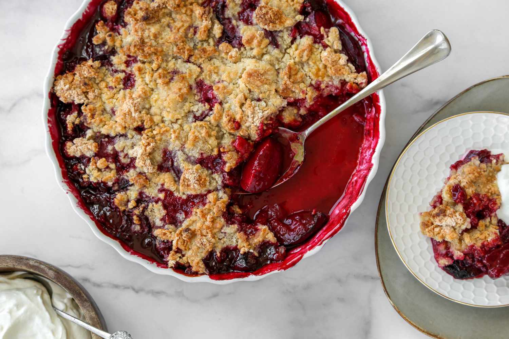

Plum Crumble

Description
This plum crumble, or plum crisp, contains fresh plums topped with a fabulous crumb mixture, and the easy topping is made with a lightly spiced mixture of flour, sugar, and butter.
A crumble is an excellent way to use fresh plums, and other fruits may be added to the fruit filling, such as sliced pears, nectarines, apricots, or peaches. Or add some blueberries. Or replace the plums with pluots (plum-apricot hybrid fruits).
To make single-serve desserts, divide the filling and topping among four to six buttered ramekins.
Ingredients
- 800g ripe cooking plums
- 50g light brown sugar
- finely grated 1 zest orange
- 1 tsp ground cinnamon
- 1 tsp plain flour
For the crumble
- 250g plain flour
- 150g butter
- 80g caster sugar
- 80g demerara sugar
- 50g ground almonds
Steps
- Heat the oven to 200C/180C fan/gas 6. Put the plums into the base of a shallow gratin dish about 28cm long. Mix together the sugar, orange zest, cinnamon and flour and sprinkle over the plums. Trickle over 2 tbsp water.
- Put all the crumble ingredients into a food processor, and using the pulse button, whizz until the mixture just starts to clump together. Take care not to over process at this stage. Alternatively, rub the butter into the flour using your hands and then stir in the other ingredients.
- Scatter the crumble over the plums and bake in the oven for 30–40 mins until golden brown. Leave for about 15 mins before serving with custard or cream.